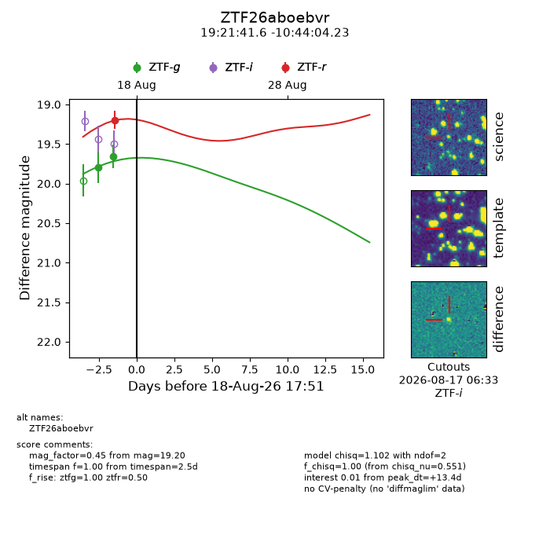
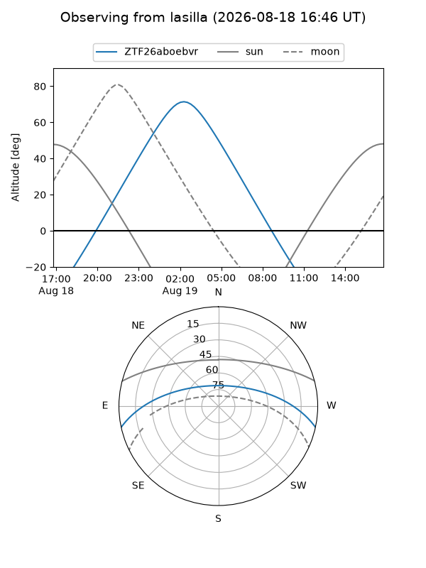
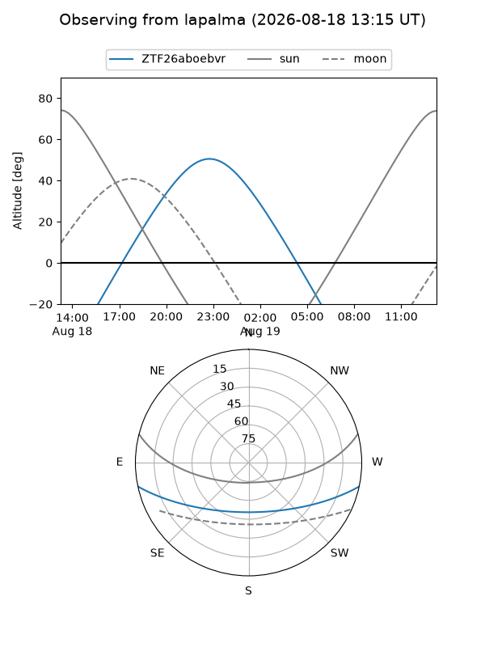
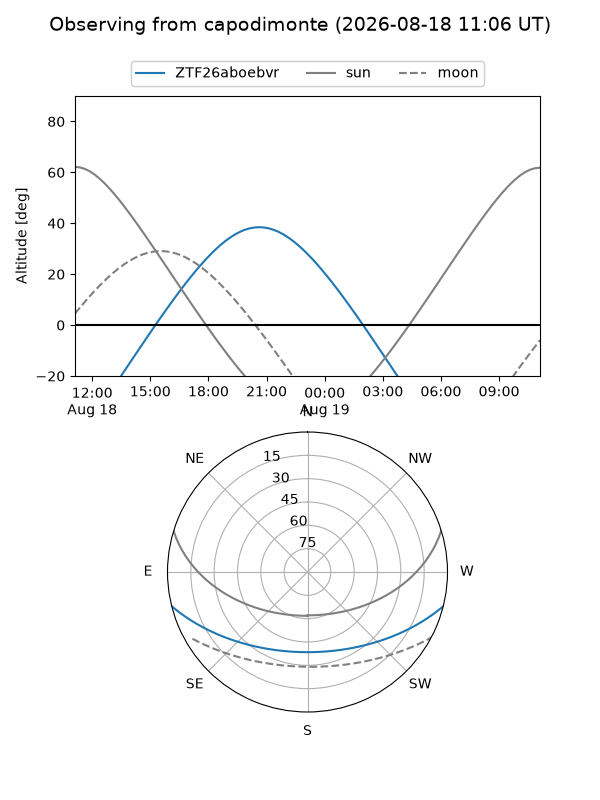
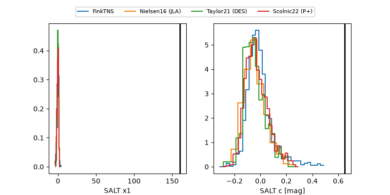

ZTF26aboebvr
Target ZTF26aboebvr at 2026-08-19 05:51
Aliases and brokers:
FINK-ZTF: ztf.fink-portal.org/ZTF26aboebvr
Lasair-ZTF: lasair-ztf.lsst.ac.uk/objects/ZTF26aboebvr
ALeRCE-ZTF: alerce.online/object/ZTF26aboebvr
Direct TNS query: direct search
alt names
ZTF26aboebvr (ztf,fink_ztf)
Coordinates:
equatorial (ra, dec) = 290.4235,-10.73451
equatorial (HMS+DMS) = 19:21:41.64,-10:44:04.23
galactic (l, b) = (26.6744,-11.53893)
Flags:
peak dt: +13.9
Photometry:
last ztfg=19.66, ztfr=19.20
2 ztfg, 1 ztfr detections
Lightcurve

Visibility



Additional plots
